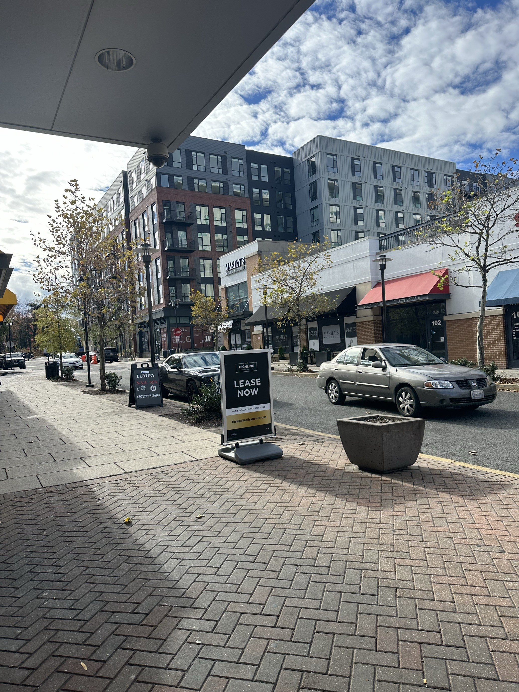

By Danna Matheus, University of Maryland Journalism Student
The City of Hyattsville, in partnership with the Neighborhood Design Center (NDC), is actively shaping the future of the West Hyattsville Green Alley, an initiative aimed at revitalizing the alley behind the Queens Chapel Town Center.
In early 2024, the City of Hyattsville held two important community engagement events. The first, a Race & Equity Listening Session on Jan. 13, focused on gathering input from community members about how the Green Alley project could be developed in relation to equity. This session was an opportunity for local residents to share their thoughts on how the design could address community concerns, promote inclusivity, and ensure that improvements benefit all stakeholders.
"The goal of the listening session was to ensure that the Green Alley project reflects the diverse needs of our community, especially those who may not always have a seat at the table," said Cindy Zork, the Communications Specialist of the City of Hyattsville. "By engaging with residents early in the process, we're taking the necessary steps to create a project that fosters a sense of belonging and opportunity."
The second meeting, held on Feb. 20, focused on the business owners in the area, particularly those in the Queens Chapel Town Center and the University Town Center area.
The vision for the alley includes features such as green spaces, stormwater solutions, and public amenities, all designed to strengthen the connection between the neighborhood and the business district.
The City remains committed to addressing concerns beyond the physical design. Issues such as crime, loitering, and public intoxication have been raised, particularly in the context of the alley's current state. While the Green Alley project is focused on infrastructure improvements, the City recognizes that these broader social challenges must also be addressed.
Business owners also expressed concerns about the current issues with homelessness, loitering, and vagrancy in the area, affecting businesses. Melissa Hill, the manager of 1123 by Chef Tobias, a new restaurant that opened on Nov. 23, noticed a few people who appear to be homeless in the UTC area.
She wrote a letter on behalf of Tobias to find ways to address this.
"So we can work as a community together to find resources for these individuals that could potentially be homeless, just something to try to make the general area a little more safe at least from the view from guest perception and our staff feeling a little more comfortable being here," said Hill
In a survey administered by The City of Hyattsville between Nov. 30, 2023, and Jan. 30, 2024, which 64 willing respondents who were experiencing homelessness responded. 56.3% of those surveyed said that they sleep outside.
The business also has experienced trespassing issues. "We are considering speaking with the chief of police of Hyattsville so that we can get off-duty officers," said Hill.
The City is utilizing American Rescue Plan funds to support the project's infrastructure improvements.
The concept design was presented to the Council on Oct. 21 and was approved on Dec.2.
For more information on the project and to provide feedback, residents can visit the City's official website or participate in ongoing surveys through the HelloHyattsville platform.
Photo by Danna Matheus of the University Town Center
Photo by Danna Matheus of the University Town Center